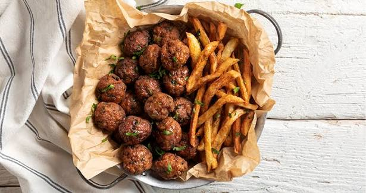

Keftedakia

hkdfskghdfkdfkjhdfjkfbbdcbhbcxnbxcnbcbfhugfgdfkbjblAISFOUHFNSC,XNLFSHLHFSLNCLN
hkbjcncxkckncxnnclkncsljsdjbckbvdlbdspqwipj934irjofsmclmxcm
- 150 γρ. ψωμί τριμμένο
- 600 γρ. χοιρινό κιμά
- αλάτι
- πιπέρι
- 1 κρεμμύδι
- 1 σκ. σκόρδο
- 1/2 ματσάκι δυόσμο
- 1 αυγό, μεσαίο
- 1/2 κ.γ. μαγειρική σόδα, προαιρετικά
- 3 κ.σ. ελαιόλαδο
- 500 γρ. πατάτες
- 600 ml σπορέλαιο, για το τηγάνισμα
- 100 γρ. αλεύρι γ.ό.χ., για το πανάρισμα
- Τοποθετούμε ένα βαθύ τηγάνι με 300 ml σπορέλαιο σε μέτρια φωτιά.
- Βάζουμε σε ένα μπολ το ψωμί, τον κιμά, αλάτι και πιπέρι.
- Τρίβουμε το κρεμμύδι και το σκόρδο στον τρίφτη και τα ρίχνουμε στο μπολ.
- Προσθέτουμε τον δυόσμο ψιλοκομμένο, το αβγό, προαιρετικά τη μαγειρική σόδα, το ελαιόλαδο, και ανακατεύουμε
πολύ καλά με τα χέρια μας φορώντας γάντια.
- Πλάθουμε το μείγμα σε μικρά κεφτεδάκια, θα φτιάξουμε περίπου 28-30 τεμάχια, και τα μεταφέρουμε σε ένα ταψί
με αλεύρι. Φροντίζουμε να καλυφθεί όλη η επιφάνειά τους με αλεύρι.
- Αφαιρούμε το περιττό αλεύρι τινάζοντας τα κεφτεδάκια και τα μεταφέρουμε σε δόσεις στο καυτό λάδι.
- Τηγανίζουμε σε δόσεις για 4-5 λεπτά μέχρι να ψηθούν μέχρι μέσα και να πάρουν χρώμα.
- Παράλληλα, κόβουμε τις πατάτες σε λεπτές λωρίδες και τηγανίζουμε σε μια φριτέζα ή σε ένα τηγάνι με 300 ml
σπορέλαιο.
- Αφαιρούμε τα κεφτεδάκια από το τηγάνι και τα μεταφέρουμε σε ένα ταψί με απορροφητικό χαρτί.
- Σερβίρουμε με τις τηγανητές πατάτες.
HOME